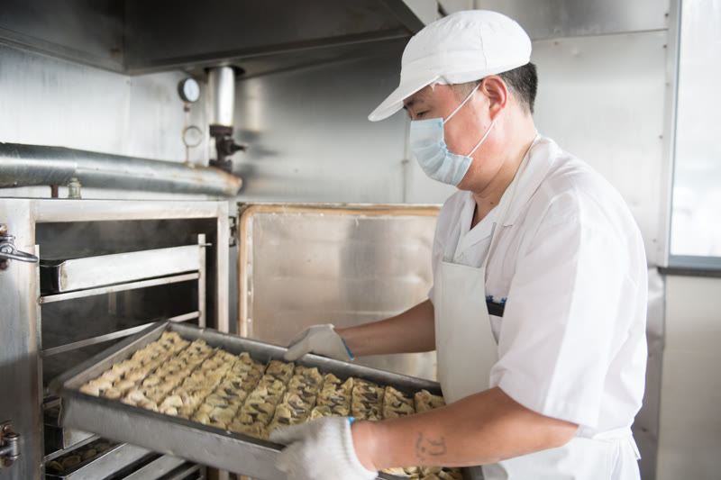
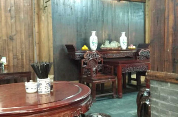
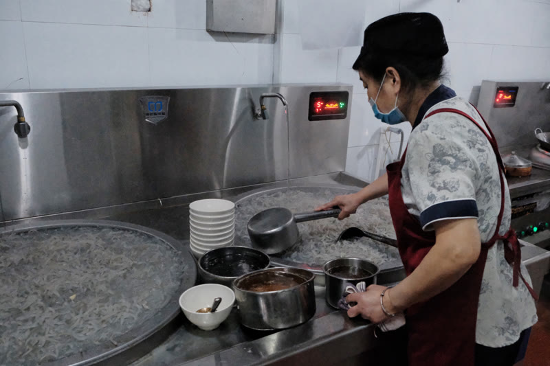
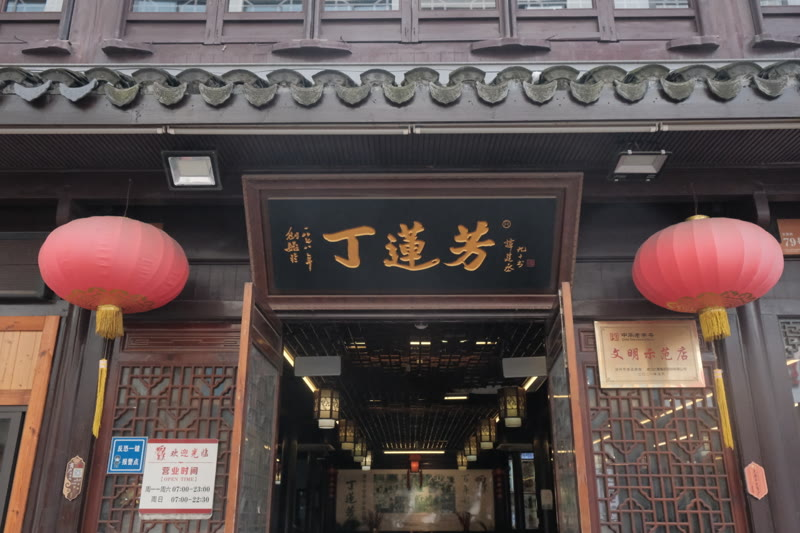
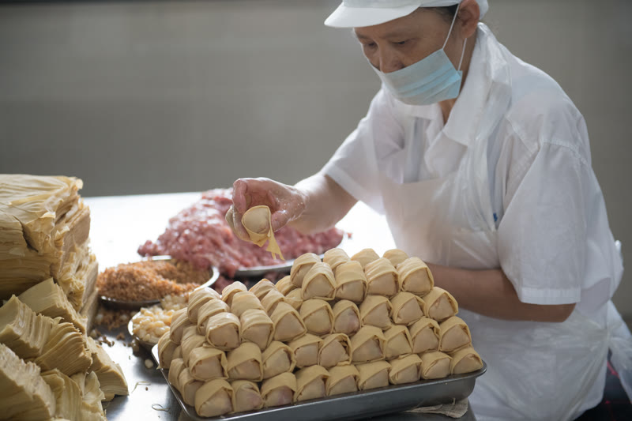
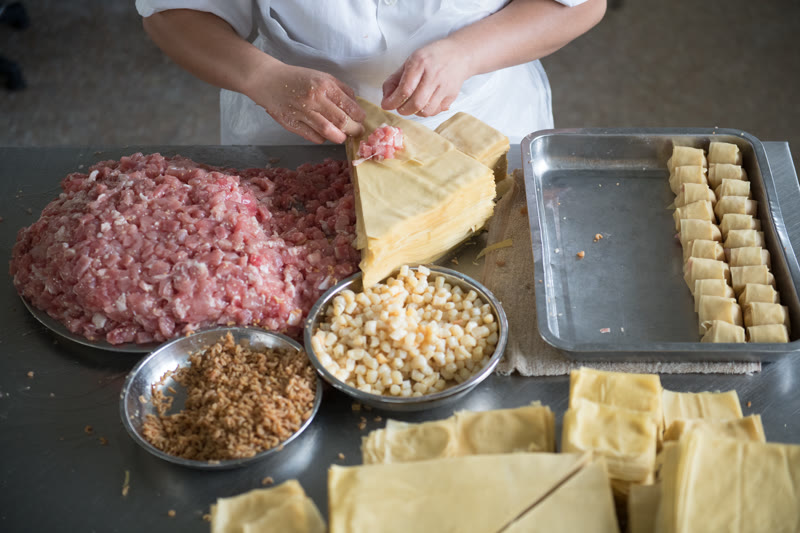

H5 · 本土文化观察
一碗千张包，
传了147年。
清光绪四年，29岁的丁莲芳挑着扁担
在湖州骆驼桥叫卖第一碗千张包子丝粉头。
一百四十七年后，
这碗老味道还在被一口口吃下去。
老字号还年轻吗？在湖州丁莲芳寻找答案
背景图：新华社记者翁忻旸 摄
下滑探索
壹 · 起点
每天晚上八点，
一副担子出现在骆驼桥。
1878年。丁莲芳原本是湖州城里一个挑葱卖菜的小贩。
风雪严冬，糊口艰难。29岁那年他下定决心改行——
做"吃"这一行。本钱小，设摊挑担，翻身快。
但烧饼、粽子、馄饨、豆浆……市面上什么都有了。
他观察到街头已有牛肉丝粉汤、油豆腐丝粉头的摊子，
灵机一动：把千张皮裹上肉馅做成包子，放进丝粉汤里卖。
买了一口锅，做了一副担子——
"千张包子丝粉头"，就这样诞生了。
白天备料，晚上出摊。
地点选在骆驼桥堍鱼行口——当时湖州最繁华的地段。
每晚八点到子夜一点，看夜戏散场的市民、
磨夜的游民，成了第一批顾客。一天卖出百来客。
"他选择了一个别人没做过的方式——
不是模仿，是创造。"
贰 · 蜕变
三年，三次改良。
从家常小吃变成湖州名点。
卖了一年，老顾客越来越多。那些"懒做贪吃嘴独刁"的食客
开始给丁莲芳提意见：
第一，包子不能像家常包那样是长的，要改；
第二，馅心还不够鲜，要加提鲜的料；
第三，粉丝不要细的，要做粗的。
丁莲芳虚心听取，一条一条改：
形状从长方形改成方形，最终定型为三角形——
3厘米等边三角棱柱，每只精确到28克。
馅料中加入开洋（虾米）提鲜。
细粉丝换成定制的绿豆粗丝粉——
久煮不糊，柔软入味。
三次改良之后，彻底摆脱家常色彩，
日销量从一百多客涨到两百多客。
 手工包制 · 吴兴区政府网
手工包制 · 吴兴区政府网
◆

新华社 翁忻旸 摄
千张包子实拍
 吴兴区政府网
吴兴区政府网
粉丝汤实拍
叁 · 扎根
1882年，
第一块"丁莲芳"招牌
挂上黄沙路。

丁莲芳门店 · 团队拍摄
◆
创业第三年（1881年），丁莲芳不再挑担流动，
在骆驼桥上设了固定摊位——
一块桌板、一个防蝇防尘玻璃罩，
辣油、辣酱、白胡椒、大蒜叶一字排开。
名气越传越远，口袋里的本钱也越积越多。
1882年，真正改变命运的一年。
丁莲芳在黄沙路（今红旗路）找到店面，
正式挂出"丁莲芳千张包子店"招牌——
用自己的名字做招牌，这是那个年代少见的魄力。
他定制了一个紫铜大暖锅放在柜台上，
热气腾腾，香气四溢，边烧边卖——
成了黄沙路上一道活的风景线。
日销量猛增到三百多客。
馅料再次升级：在开洋之外，加入干贝——
鲜味又上了一个层次。
"不是等生意来找他，
是他让行人老远就闻到、看到、想尝。"
肆 · 接棒
父亲走了，
儿子把千张包做得更讲究了。

刚出笼的千张包子 · 吴兴区政府网
◆
1928年，儿子丁焦生在外失业回到湖州，
从此父子同店经营。三年后（1931年），丁莲芳病逝。
丁焦生继承了父亲的全部手艺和招牌。
1935年，他将店址迁到黄沙路口，
座位从16个扩到34个，正式雇工收徒。
1940年日伪时期，同行周济相见丁莲芳生意兴旺，
在马路对面也开了一家千张包子店，正面竞争。
丁焦生的回应不是降价，而是做更好的包子：
鲜腿肉去掉所有的筋、膜、肥膘，
只用纯精腿肉；
开洋进朝鲜的，干贝进日本的，
笋衣只要孝丰蝴蝶片的。
再加薄利多销——几个月后，周济相竞争失利，
转而经营馄饨，取名"周生记"，
后来也成了湖州响当当的名点。
1956年公私合营，丁焦生夫妇亲自传授技艺，
日产量从五六百只跃升到一千多只。
"丁焦生没有守成，他把父亲的基础做了加法。
竞争没能打败他，反而逼出了更极致的工艺。"
伍 · 托付
"一定要把丁莲芳
恢复往日辉煌。"
刚出笼的千张包 · 新华社
◆
1976年，文化大革命尚未完全结束。
"丁莲芳"的招牌在那段岁月里早已被摘掉，
改名为"立新千张包子店"。
一个叫陈连江的人被调到立新店工作。
他的真诚和执着打动了年迈的丁焦生——
丁焦生把凝聚两代人心血的
丁莲芳千张包子全部配方和制作技艺，
毫无保留地传授给了陈连江。
传完的那一天，老人含泪嘱托：
"一定要把'丁莲芳'三个字恢复回来。"
1978年，陈连江担任经理。
他没有辜负嘱托：设计制造了
"不锈钢包子定型蒸熟器"——
用蒸汽替代水煮。包子不再泡在沸水里翻滚，
三角棱柱的造型更挺括，色香味全面稳定，
产量和品控同步跃升。
1989年，陈连江带队参加全国点心评选，
荣获商业部"金鼎奖"，从此驰名海内外。
陆 · 食材
一只千张包，
从选料开始就不将就。

千张包制作过程 · 吴兴区政府网
不是随便一块豆腐皮裹点肉就叫千张包子。
丁莲芳千张包子是浙江省非物质文化遗产——
每一道工序都有严格标准。
◆
肉的讲究
只用鲜猪后腿纯精肉。
洗清沥干之后，要经过五道工序：
去骨 → 去皮 → 去膈 → 去膜 → 去筋
然后切片、切条，最终切成1厘米见方的肉粒。
手工拌入上等黄酒、味精、白糖、食盐——
一斤肉出一斤馅，没有水分。
皮的讲究
取26cm × 42cm黄豆特制千张。
26cm边切去5cm做垫头，对折成21cm×21cm，
再对角切成两个三角形。
千张皮薄如蝉翼，但久煮不破、韧而不烂——
这是湖州黄豆和水的秘密。
三鲜的讲究
开洋（虾米）：上等黄酒浸泡后入馅
干贝：剔除杂质，黄酒浸泡蒸熟后入馅
笋衣：孝丰蝴蝶片笋衣，取其嫩薄
另加芝麻：剔除杂质，入锅炒熟捣碎
这些辅料，每一样都经过单独处理后才进入包子。
柒 · 手作
纯手工。
每一只都包了147年。
千张包子粉丝汤 · 吴兴区政府网
◆
包制手法
三角形千张平铺→放垫头→取肉馅+干贝+开洋→手工卷裹成3cm三角棱柱状→五个一捆用笋壳丝扎好→入毛竹丝篮排好→毛竹片夹住固定
蒸制
不锈钢定型蒸熟器蒸汽蒸制（1978年前为沸水煮15分钟）。蒸汽法使包子外形更挺括、三角棱柱更明显
丝粉
纯绿豆丝粉，白而粗。久煮不糊，柔软入味，鲜中透香——这是从第三次改良起就定下的标准
吃法
千张包+粗粉丝入碗，浇汤。佐辣油、米醋、白胡椒粉、小葱。老食客说：加一勺红油辣酱才是正确的打开方式
成品标准：皮薄韧、馅鲜美、汁香浓、肉嫩不腻、色白汤青。
捌 · 探访
走，去衣裳街
吃一碗真的。
说的再多，不如亲眼看看。
从门头到后厨，从点单到上桌——
跟镜头一起，探一探这碗147年的老味道。
吴兴区政府网
千张包子粉丝汤
◆
探店视频 · 丁莲芳实探（约6分钟）
玖 · 声音
同样一碗千张包，
不同的人怎么想？
本地老顾客 · 从小吃到大
"就吃这小时候的味道。"
◆
 丁莲芳店内 · 团队拍摄
丁莲芳店内 · 团队拍摄
外地游客 · 第一次来丁莲芳
"这个确实很好吃。之前没吃过，顺路过来看一看。"
一位本地老客吃了十几年，就认这口小时候的味道。
一位外地游客顺路探店，吃出了惊喜。
老字号还年轻吗？答案就在这些真实的声音里。
拾 · 跨越
147年，
哪些变了，哪些没变？

新华社
手工包制 · 五代未变

新华社
电商发货 · 走向全国
◆
1878丁莲芳挑担叫卖，创制千张包子丝粉头
1881骆驼桥固定摊位，加调料、制玻璃罩
1882黄沙路第一家店，紫铜暖锅边烧边卖
1931丁莲芳逝世，丁焦生继承父业
1935迁黄沙路口，扩至34座，雇工收徒
1940竞争周济相，逼出更极致的纯精腿肉工艺
1956公私合营，日产量破1000只
1976陈连江受配方之托，第三代传承人接棒
1978蒸汽定型器诞生，水煮变蒸汽，品控升级
1989获商业部金鼎奖，驰名海内外
2006获评首批"中华老字号"
2009制作技艺列入浙江省非遗
2010进驻上海世博会
至今日产量逾7000只，天猫旗舰店在线，五代传承
拾壹 · 荣耀
一碗千张包，
凭什么成为
湖州人的骄傲？
 顾客在店内选购 · 新华社
顾客在店内选购 · 新华社
中华老字号（2006首批）
浙江省非遗（2009）
金鼎奖（1989）
上海世博会参展（2010）
湖州四大小吃之首
日产量逾7000只
◆
湖州籍著名书法家费新我品尝后，
亲笔题写："鲜而精，名乃扬"。
丁莲芳千张包子与周生记馄饨、震远同酥糖、诸老大粽子
并称"湖州四大小吃"，位列四大之首。
对湖州人来说，它的意义超越了食物本身：
· 是小时候考了好成绩被奖励的那一碗
· 是在外多年的湖州人回来第一个要吃的味道
· 是一代代人用筷子接住的、不会断掉的日常
· 更是一种"湖州人知道什么东西是好的"的底气
"鲜而精，名乃扬"
— 费新我题赠丁莲芳
拾贰 · 根脉
文化不一定以宏大方式存在。
它可能就藏在一只千张包里。
 衣裳街历史文化街区 · 新华社 翁忻旸 摄
衣裳街历史文化街区 · 新华社 翁忻旸 摄
◆
当游客不远百里专程来吃一碗，
当本地人几十年不间断地走进同一家店，
当三角棱柱的3厘米造型一百四十七年不走样——
本土文化就没有停在被怀念的那一端。
它正在被消费、被讨论、被拍进视频、
被写进小红书攻略、被装进天猫快递箱里。
本土文化的年轻化突围，
不需要口号，只需要有人还在继续做、继续吃。
"鲜而精，名乃扬"
真正能留下来的老味道，从来不只靠"老"字活着。
靠的是：
每一只28克的千张包，
皮还是26×42cm黄豆特制千张皮，
馅还是去筋去膜去膈的纯精腿肉，
形还是三厘米等边三角，147年不走样。
更靠的是——
今天仍有人愿意走进去、坐下来、
夹起一只千张包，蘸上辣油，
再把它讲给别人听。
♫